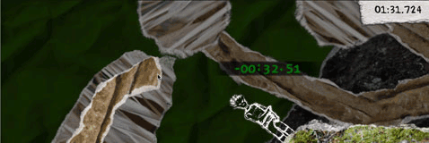

12 |
Spielmodi |
 |
|

Spielmodi erlauben dir, dich auf verschiedene Aspekte von And Yet It Moves zu konzentrieren.
Im standardmäßig ausgewählten Reise-Modus, kannst du die einzelnen Level ohne Hektik erkunden. Sobald du diese Modi bewältigt hast, bekommst du als Belohnung Stempel in der Level Selection Liste. Für jedes Level kannst du insgesamt drei Stempel bekommen, wobei jeder Stempel schwieriger zu erreichen ist als der vorhergegangene. Um diese Spielmodi freizuschalten, musst du einzelnen Kapitel des Reisemodus spielen. |
 |
 |
 |